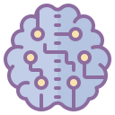

Преминение искусственных технологий
Искусственные нейросетевые технологии применимы практически во всех областях, использующих видеонаблюдение. Как и другие методы машинного зрения, нейросети предназначены для извлечения из потока изображений информации о наблюдаемой сцене и присутствующих на ней объектах.
РОЗНИЧНАЯ ТОРГОВЛЯ
At our advanced robotics lab, we currently try to be intact with the upcoming 4th Industrial Revolution, developing more advanced, machine learning manufacturing systems….
Last updated
ТРАНСПОРТ
As vague as the field may sound, not many people are aware that chemistry is basically the lynchpin ingredient of making all the products that the modern world uses…
Last updated
 БАНКОВСКАЯ ОТРАСЛЬ
Probably, humans wanted to create an equally intelligent counterpart for as long as there’s civilization. But it’s only now when the technology and desire are close to being intact…
Last updated
ОБЩЕСТВЕННАЯ ОТРАСЛЬ
This research department is the biggest of all we have, focusing on both understanding the diseases that roam our world, just as well as finding cost-efficient cures and medication……
Last updated
 ОБЩЕСТВЕННАЯ
БЕЗОПАСНОСТЬ
ОБЩЕСТВЕННАЯ
БЕЗОПАСНОСТЬ
As we were already working on computers since the ’50s, we are naturally interested in helping to advance both the hardware and the software industry that IT is divided into
Last updated
ОХРАНА ПРИРОДЫ
As the energy market continues its slow movement from using fossil fuels, it’s critical that new, safe and renewable energy sources advance forward in order to help modern…
Last updated